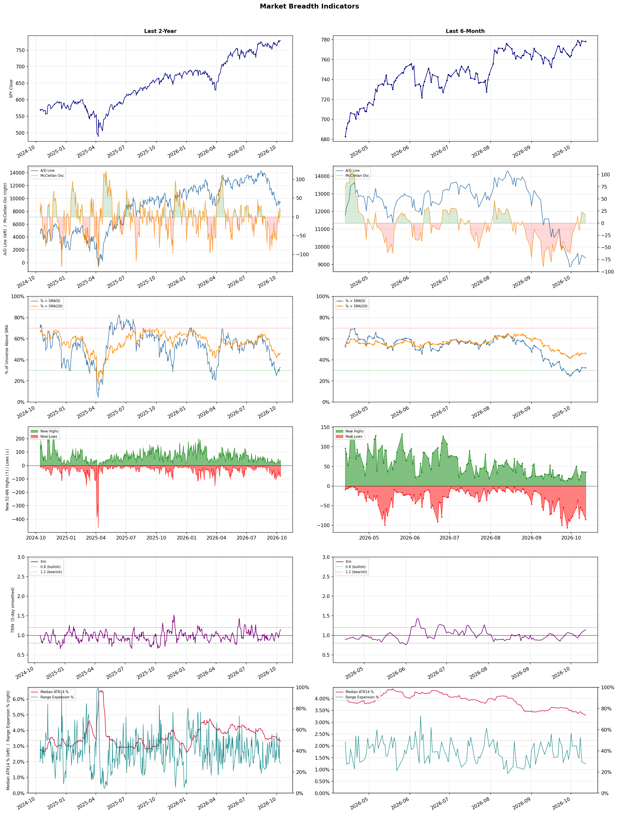

A daily market breadth and sector rotation report for active investors
| Item | Read |
|---|---|
| Regime | Defensive |
| Risk posture | Defensive |
| Universe | 1,316 stocks tracked · 36 new 52-week highs · 30 active swing setups |
| Breadth | only 32.5% of tracked stocks are above SMA50, new lows exceed new highs (85 vs 36) |
| Leadership | Oil & Gas Refining & Marketing, Health Information Services, and Copper |
| Weakest groups | Gambling, REIT - Mortgage, and Resorts & Casinos |
Use this report to prioritize research and chart review; validate entries, stops, liquidity, earnings, and risk before acting.
| Item | Read |
|---|---|
| Primary read | Defensive regime with Defensive risk posture. |
| Research queue | MPC, VLO, DINO, PSX, PBF |
| Leadership focus | Oil & Gas Refining & Marketing, Health Information Services, and Copper |
| Caution list | Gambling, REIT - Mortgage, and Resorts & Casinos |
| Review prompt | Check extension risk, chart location, fundamentals, valuation, and earnings before using any research row. |
| Item | Read |
|---|---|
| Primary read | 3 active risk warnings; use screen output as watchlist input only. |
| Bullish screens | DINO, HNGE, PBR, SU, XOM |
| Bearish screens | INDI, LAES, BROS, BLDR, SMR |
| Alerts / levels | Automated trigger, stop, ATR, liquidity, reward/risk, and event-risk levels are pending future enrichment. |
| Review prompt | Open the linked chart, define trigger and invalidation, then check liquidity and event risk independently. |
Risk Posture: Defensive — screen backdrop favors caution; require independent risk review before new exposure
Metric context: McClellan below -50 = elevated selling pressure; below -100 = washout territory. Range Expansion = share of stocks with daily range above their 20-day average. Signal Density = share of tracked names appearing in signal screens.
| Breadth Date | % > SMA50 | % > SMA200 | New Highs | New Lows | McClellan | Median Range | Avg Range | Median ATR14 | Range Expansion | Signal Density |
|---|---|---|---|---|---|---|---|---|---|---|
| 2026-10-12 | 32.5% | 46.2% | 36 | 85 | 17.0 | 2.5% | 3.1% | 3.3% | 27.9% | 1.7% |

Prior comparison date: October 9, 2026
| Metric | Prior | Current | Change |
|---|---|---|---|
| Regime | Defensive | Defensive | unchanged |
| Risk Posture | Defensive | Defensive | unchanged |
| % > SMA50 | 32.5% | 32.5% | +0.0 pts |
| % > SMA200 | 46.1% | 46.2% | +0.1 pts |
| New Highs | 37 | 36 | -1 |
| New Lows | 60 | 85 | -25 |
Top-10 industries entering: Apparel Retail, Scientific & Technical Instruments, and Steel. Top-10 industries leaving: Discount Stores, REIT - Hotel & Motel, and Software - Application. New multi-signal long setups: ABBV, ASX, DT, FIGS, GME, HNGE. New multi-signal short setups: BLDR, BROS, INDI, LAES.
| Status | Tickers | Read |
|---|---|---|
| Added | ABBV, AMAT, ASX, BLDR, BROS, COHU, DT, FIGS | New technical screen matches vs prior report. |
| Removed | BEKE, BLDP, EOSE, EXEL, HAYW, HRL, LBTYA, LBTYK | No longer present in today's technical screen matches. |
| Still Active | BOX, DINO, FMC, GTLB, HAS, PBR, SMR, SU | Appeared in both current and prior reports. |
| Promoted | none | Model Screen Score improved by at least 15 points. |
| Downgraded | none | Model Screen Score declined by at least 15 points. |
| Direction | Industry | ETF | Prior Rank | Current Rank | Days | Rank Change |
|---|---|---|---|---|---|---|
| Rose | Semiconductor Equipment & Materials | SOXX | 80 | 14 | 35 | +66 |
| Rose | Electronic Components | XLK | 81 | 22 | 35 | +59 |
| Rose | Apparel Manufacturing | N/A | 77 | 19 | 35 | +58 |
| Rose | Utilities - Independent Power Producers | XLU | 83 | 29 | 28 | +54 |
| Rose | Scientific & Technical Instruments | N/A | 63 | 10 | 35 | +53 |
Bull: The Semiconductor Equipment & Materials sector is experiencing a bullish trend primarily driven by heightened investment in artificial intelligence (AI), as indicated by the rally in materials, parts, and equipment stocks due to AI investment hopes. This optimism is further supported by positive sentiment reflected in recent headlines highlighting strong performances from key players like Lam Research and Applied Materials, suggesting robust demand for semiconductor manufacturing equipment as the industry positions itself for growth in 2026 and beyond. The overall sector's resilience in the face of a semiconductor slump underscores its critical role in supporting the expanding AI and tech landscape.
Bear: While the recent rally in semiconductor equipment stocks may be attributed to AI investment hopes, it is essential to recognize that this optimism could be short-lived, as the semiconductor industry is currently facing significant headwinds, including oversupply, declining demand in consumer electronics, and geopolitical tensions affecting supply chains. Furthermore, the anticipated growth driven by AI may not materialize as quickly as projected, leading to potential overvaluation of stocks in this sector and exposing investors to heightened risks if the expected demand fails to materialize.
Verdict: The Semiconductor Equipment & Materials sector is rallying due to increased investment in AI, which is driving demand for semiconductor manufacturing equipment as companies prepare for future growth. However, investors should remain cautious of potential overvaluation risks stemming from current industry headwinds, including oversupply and declining demand in consumer electronics, which could undermine the anticipated growth from AI investments.
Sources: Google News
Bull: The rising relative strength of the Electronic Components sector can be attributed to robust earnings performance from key players like Amphenol (NYSE: APH), which has been highlighted as a leader in the industry, signaling strong demand and operational efficiency. Additionally, the overall positive sentiment reflected in earnings reports, despite some volatility as seen with Littelfuse's decline, suggests that the sector is benefiting from increasing technological adoption and innovation, particularly in areas like electric vehicles and renewable energy, which are driving growth across the industry.
Bear: While the rising relative strength of the Electronic Components sector may seem promising, it is essential to recognize that this trend is not universally reflective of the industry's health. The notable decline of Littelfuse, coupled with mixed earnings reports from other players, suggests underlying volatility and potential overvaluation. Furthermore, the reliance on specific sectors like electric vehicles and renewable energy may expose the industry to cyclical downturns and regulatory risks, which could undermine growth prospects in the long term.
Verdict: The Electronic Components sector is experiencing rising strength primarily due to strong earnings from key players like Amphenol, driven by increasing demand from high-growth areas such as electric vehicles and renewable energy. However, investors should remain cautious of the potential volatility highlighted by Littelfuse's decline and the sector's dependence on cyclical trends and regulatory risks, which could impact long-term growth. It is advisable to closely monitor earnings reports and market sentiment to gauge the sustainability of this upward trend.
Sources: Google News
Bull: The Apparel Manufacturing sector is experiencing rising relative strength primarily due to favorable industry trends driven by shifts in trade dynamics and sourcing strategies, as highlighted in recent headlines. The anticipated revival in the sector, fueled by trade deals and a pivot away from reliance on China for sourcing, positions key textile-apparel stocks for growth, as noted by Yahoo Finance and The Economic Times. This positive momentum is further supported by expert recommendations from sources like The Motley Fool and Forbes, indicating strong investor confidence in the sector's potential through 2026.
Bear: While the apparel manufacturing sector may currently exhibit rising relative strength, this momentum could be misleading given the broader economic uncertainties, including inflationary pressures and potential shifts in consumer spending habits. Additionally, the anticipated benefits from trade deals and sourcing shifts away from China may take time to materialize, and companies may face significant challenges in adapting their supply chains, leading to potential disruptions and increased costs that could undermine profitability. Thus, the optimistic projections may overlook critical risks that could hinder sustained growth in the sector.
Verdict: The apparel manufacturing sector's rising relative strength is primarily driven by favorable trade dynamics and a strategic shift away from reliance on China, positioning companies for growth as they adapt to new sourcing strategies. However, investors should remain cautious of the key risk posed by broader economic uncertainties, such as inflationary pressures and potential disruptions in supply chains, which could impede profitability and undermine the sector's optimistic outlook.
Sources: Google News
Bull: The rising relative strength of Utilities - Independent Power Producers can be attributed to their strong growth potential, as highlighted by multiple sources noting that several utility stocks carry A- or better growth grades, indicating robust financial health and performance. Additionally, the increasing focus on renewable energy and the integration of AI in power generation, as mentioned in recent headlines, suggest a shift towards more efficient and sustainable energy solutions, further enhancing the attractiveness of this sector to investors. This combination of solid growth metrics and a favorable macro environment for renewable energy positions utilities as a compelling investment opportunity.
Bear: While the rising relative strength of Utilities - Independent Power Producers may seem promising, it is crucial to consider the potential headwinds such as regulatory challenges, rising interest rates, and the high capital expenditure required for transitioning to renewable energy sources. Additionally, the focus on growth grades may overlook the inherent volatility and market saturation risks in the utility sector, which could undermine the long-term financial health and performance of these companies despite short-term optimism.
Verdict: The rising relative strength of Utilities - Independent Power Producers is primarily driven by their strong growth potential in the context of increasing demand for renewable energy and advancements in AI technology for power generation, making them attractive to investors. However, key risks include regulatory challenges and rising interest rates, which could impact capital expenditures and overall financial stability in the long term. Investors should closely monitor these macroeconomic factors while considering positions in this sector.
Sources: Google News
Bull: The Scientific & Technical Instruments sector is experiencing rising relative strength primarily due to the increasing demand for advanced technologies driven by the AI boom, as highlighted in the Morningstar article discussing the significant gap in tech stock returns. Companies like Coherent Corp. and Keyence Corporation are well-positioned to benefit from this trend, as they provide essential tools and technologies that support AI development and implementation. Additionally, the overall positive sentiment in the sector, as evidenced by strong performance from major players, further underscores the bullish outlook for Scientific & Technical Instruments.
Bear: While the rising relative strength in the Scientific & Technical Instruments sector may appear promising, it is crucial to consider the potential overvaluation of these stocks amid the AI boom hype. Companies like Coherent Corp. and Keyence Corporation may face increasing competition and margin pressures as new entrants flood the market with similar technologies, potentially diluting their market share. Furthermore, any slowdown in AI investment or broader economic uncertainties could lead to a sharp correction in stock prices, undermining the current bullish sentiment.
Verdict: The Scientific & Technical Instruments sector is experiencing rising relative strength due to heightened demand for advanced technologies fueled by the AI boom, with key players like Coherent Corp. and Keyence Corporation poised to capitalize on this trend. However, investors should remain cautious of potential overvaluation and the risk of increased competition, which could pressure margins and market share, especially if AI investments slow down or economic uncertainties arise.
Sources: Google News
| Direction | Industry | ETF | Prior Rank | Current Rank | Days | Rank Change |
|---|---|---|---|---|---|---|
| Fell | Uranium | URA | 21 | 83 | 35 | -62 |
| Fell | Agricultural Inputs | N/A | 5 | 62 | 35 | -57 |
| Fell | Telecom Services | N/A | 25 | 75 | 28 | -50 |
| Fell | Banks - Diversified | N/A | 11 | 60 | 35 | -49 |
| Fell | Gambling | N/A | 43 | 87 | 35 | -44 |
Bear: While the bull analyst attributes the recent decline in uranium stocks to a sector correction and highlights the disparity between profitable producers and loss-making developers, this view overlooks the broader macroeconomic environment that is increasingly unfavorable for the sector. Rising interest rates and inflation not only dampen investor sentiment but also raise the cost of capital for uranium projects, particularly for developers who are already struggling financially. Furthermore, the volatility in energy markets and geopolitical uncertainties surrounding nuclear energy could lead to a sustained period of underperformance for uranium stocks, as investors may prioritize more stable and profitable sectors amidst rising economic headwinds.
Bull: The recent decline in the relative strength of uranium stocks can be attributed to a sector correction that has highlighted the disparity between profitable uranium producers and loss-making developers, as indicated by the ChartMill headline. Additionally, the mixed performance of companies like enCore Energy, which saw a significant drop, suggests that investor sentiment is being affected by concerns over profitability and operational viability within the industry. This environment of uncertainty may be exacerbated by broader market trends and investor caution, particularly as the sector grapples with the implications of rising interest rates and inflationary pressures.
Verdict: The recent decline in uranium stocks is primarily driven by a sector correction that has exposed the financial vulnerabilities of less profitable developers amidst rising interest rates and inflation, which increase the cost of capital and dampen investor sentiment. The key risk from the bear case is the potential for prolonged underperformance due to macroeconomic headwinds and geopolitical uncertainties, prompting investors to favor more stable sectors. To navigate this environment, stakeholders should focus on identifying financially robust producers while remaining cautious of the broader economic landscape's impact on the industry.
Sources: Google News
Bear: While the bull analyst highlights potential recovery opportunities in the agricultural inputs sector, the persistent supply shocks in fertilizers and energy are likely to exacerbate cost pressures for farmers, leading to reduced margins and lower demand for inputs. Furthermore, the shift of investor focus to other economically sensitive sectors, as noted, suggests that agricultural inputs may remain out of favor for an extended period, particularly if broader economic conditions continue to deteriorate or if commodity prices remain volatile. This combination of ongoing cost challenges and shifting investor sentiment raises significant concerns about the near-term viability and growth prospects of the agricultural inputs sector.
Bull: The Agricultural Inputs sector is likely experiencing a decline in relative strength due to ongoing supply shocks in fertilizers and energy, as highlighted by the Webull article, which can create uncertainty and volatility in input costs for farmers. Additionally, the broader economic environment, as indicated by Seeking Alpha's commentary on the materials sector breaking out, suggests that investors might be shifting their focus to other economically sensitive sectors that are currently outperforming, leading to a temporary underperformance in agricultural inputs. However, with Morningstar noting that over half of the basic materials sector is undervalued, this presents a significant opportunity for investors to capitalize on the eventual recovery and growth potential in agricultural inputs.
Verdict: The agricultural inputs sector is likely declining due to persistent supply shocks in fertilizers and energy, which are driving up costs for farmers and squeezing their margins, leading to reduced demand for inputs. The key risk from the bear case is that if these cost pressures continue and investor sentiment remains focused on outperforming sectors, agricultural inputs may struggle to recover in the near term. Investors should closely monitor commodity price volatility and broader economic indicators to gauge the timing of any potential rebound in this sector.
Sources: Google News
Bear: While the bull analyst attributes the decline in the Telecom Services sector's relative strength to competitive pressures from SpaceX and a shift towards emerging players, it's crucial to recognize that traditional telecom companies are grappling with longstanding issues such as high debt levels, stagnant subscriber growth, and increasing operational costs. Moreover, the recent headlines indicate a broader skepticism about the sector's growth potential, as evidenced by the focus on identifying "the best" stocks for the future, which could signal a lack of confidence in the established players' ability to innovate and adapt in a rapidly evolving market. This suggests that the challenges facing traditional telecoms are systemic rather than merely competitive, raising concerns about their long-term viability.
Bull: The recent decline in the relative strength of the Telecom Services sector can largely be attributed to heightened competitive pressures, particularly stemming from SpaceX's spectrum deal, which has raised concerns about market share and pricing power among traditional telecom providers. Additionally, the focus on identifying top communication stocks for the future, as highlighted in multiple articles, suggests that investors may be shifting their attention to emerging players and technologies, potentially sidelining established telecom companies in favor of those perceived as having better growth prospects.
Verdict: The Telecom Services sector's decline is primarily driven by heightened competitive pressures from new entrants like SpaceX, which are intensifying market dynamics and prompting investors to seek growth opportunities outside traditional telecom companies. However, the key risk highlighted by the bear case is the longstanding structural challenges faced by established players, including high debt levels and stagnant subscriber growth, which could hinder their ability to innovate and maintain market relevance in the face of evolving consumer demands. Investors should closely monitor these systemic issues as they assess the long-term viability of traditional telecom stocks.
Sources: Google News
Bear: While the bull analyst attributes the recent weakness in the Banks - Diversified sector to macroeconomic factors, it is crucial to recognize that the banking industry is facing structural challenges that extend beyond interest rates and inflation. Increased regulatory scrutiny, rising competition from fintech disruptors, and a potential downturn in consumer credit quality could further erode profit margins and loan demand, leading to a more prolonged period of underperformance in bank stocks. Additionally, the shift in investor sentiment towards growth stocks may indicate a broader loss of confidence in traditional banking models, which could hinder recovery prospects for the sector.
Bull: The recent relative weakness of the Banks - Diversified sector can largely be attributed to macroeconomic concerns, particularly rising interest rates and inflation, which have pressured profit margins and loan demand. As highlighted in the headlines, analysts are focusing on growth opportunities in other sectors, as seen in the recommendations from BofA and Morningstar, indicating a shift in investor sentiment away from banks in favor of more promising growth stocks. This trend is further compounded by the emphasis on diversifying portfolios away from traditional banking stocks, as suggested by the articles from The Motley Fool and US News Money.
Verdict: The recent decline in the Banks - Diversified sector is primarily driven by macroeconomic pressures such as rising interest rates and inflation, which have negatively impacted profit margins and loan demand. However, a key risk lies in the structural challenges facing the industry, including increased regulatory scrutiny and competition from fintech, which could exacerbate the downturn and hinder recovery prospects. Investors should closely monitor these dynamics and consider reallocating capital to sectors with stronger growth potential while remaining cautious about the long-term viability of traditional banking models.
Sources: Google News
Bear: While the bull analyst acknowledges the macroeconomic pressures and layoffs in the sports betting sector, they underplay the systemic issues plaguing the gambling industry, such as regulatory uncertainties and potential market saturation. The optimism surrounding specific stocks like DraftKings and Penn Entertainment may be misplaced, as the overall trend of falling relative strength suggests a broader decline in investor sentiment, indicating that any short-term rebounds could be fleeting amid ongoing operational challenges and a recalibrating market.
Bull: The gambling industry is currently experiencing a decline in relative strength primarily due to macroeconomic pressures and industry-specific challenges, as highlighted by recent headlines. The layoffs within the sports betting sector, as noted in the Front Office Sports article, suggest that companies are recalibrating in response to overexpansion and rising operational costs, which may be impacting investor confidence. Additionally, while some analysts are optimistic about specific stocks like DraftKings and Penn Entertainment, the overall sentiment remains cautious as the industry navigates these headwinds, as indicated by the mixed signals in articles from Yahoo Finance and The Motley Fool.
Verdict: The gambling industry's decline is fundamentally driven by macroeconomic pressures, such as rising costs and inflation, coupled with industry-specific challenges like regulatory uncertainties and potential market saturation. The key risk from the bear case is that while certain stocks may show short-term promise, the overarching trend of falling relative strength indicates a lack of sustained investor confidence, which could lead to further declines if operational challenges persist. Investors should proceed cautiously, focusing on companies with strong fundamentals and adaptability to changing market conditions.
Sources: Google News
| Industry | Rank | ETF | 7d | 14d | 28d | 42d | Chg 42d | Size | 20D | 60D | Composite | Active Setups |
|---|---|---|---|---|---|---|---|---|---|---|---|---|
| Oil & Gas Refining & Marketing | 1 | CRAK | 1 | 1 | 1 | N/A | N/A | 7 | 12.9% | 34.3% | 1.000 | 0 |
| Health Information Services | 2 | N/A | 2 | 3 | 4 | N/A | N/A | 12 | 8.1% | 33.6% | 0.930 | 1 |
| Copper | 3 | COPX | 7 | 17 | 28 | N/A | N/A | 6 | 6.1% | 29.1% | 0.903 | 0 |
| Diagnostics & Research | 4 | N/A | 3 | 2 | 2 | N/A | N/A | 16 | 4.2% | 21.7% | 0.872 | 1 |
| Oil & Gas Integrated | 5 | XLE | 5 | 4 | 3 | N/A | N/A | 10 | 2.4% | 17.3% | 0.851 | 0 |
| Apparel Retail | 6 | XRT | 12 | 16 | 36 | N/A | N/A | 8 | 7.9% | 8.2% | 0.818 | 0 |
| Steel | 7 | SLX | 13 | 9 | 10 | N/A | N/A | 5 | 1.8% | 15.8% | 0.810 | 0 |
| Household & Personal Products | 8 | XLP | 24 | 25 | 21 | N/A | N/A | 12 | 3.4% | 8.7% | 0.800 | 1 |
| Software - Infrastructure | 9 | IGV | 9 | 10 | 13 | N/A | N/A | 62 | 1.4% | 12.4% | 0.767 | 1 |
| Scientific & Technical Instruments | 10 | N/A | 14 | 21 | 54 | N/A | N/A | 7 | 5.2% | 3.5% | 0.766 | 0 |
Rank columns (7d–42d) show the industry's rank that many trading days ago — lower is stronger. Chg 42d = rank change vs 42 trading days ago — positive means the industry moved up. 20D and 60D are the mean stock return within the industry over that period. Active Setups: count of today's swing-trade candidates from this industry appearing across all signal screens.
| Industry | Rank | ETF | 7d | 14d | 28d | 42d | Chg 42d | Size | 20D | 60D | Composite | Active Setups |
|---|---|---|---|---|---|---|---|---|---|---|---|---|
| Gambling | 87 | N/A | 83 | 87 | 46 | N/A | N/A | 5 | -19.6% | -23.9% | 0.038 | 0 |
| REIT - Mortgage | 86 | N/A | 86 | 83 | 60 | N/A | N/A | 11 | -15.9% | -22.7% | 0.039 | 0 |
| Resorts & Casinos | 85 | N/A | 87 | 86 | 75 | N/A | N/A | 6 | -13.8% | -21.2% | 0.053 | 0 |
| Chemicals | 84 | N/A | 82 | 81 | 84 | N/A | N/A | 8 | -10.4% | -24.9% | 0.060 | 0 |
| Uranium | 83 | URA | 85 | 82 | 69 | N/A | N/A | 6 | -16.1% | -10.6% | 0.074 | 0 |
| Aerospace & Defense | 82 | ITA | 72 | 53 | 79 | N/A | N/A | 26 | -10.1% | -10.7% | 0.131 | 0 |
| Real Estate Services | 81 | N/A | 79 | 84 | 62 | N/A | N/A | 9 | -9.7% | -15.8% | 0.138 | 1 |
| Other Industrial Metals & Mining | 80 | N/A | 78 | 66 | 65 | N/A | N/A | 21 | -13.2% | -9.6% | 0.145 | 0 |
| Solar | 79 | TAN | 76 | 85 | 86 | N/A | N/A | 8 | -6.9% | -27.2% | 0.147 | 0 |
| Utilities - Renewable | 78 | N/A | 73 | 65 | 77 | N/A | N/A | 6 | -10.3% | -18.2% | 0.156 | 0 |
Rank columns (7d–42d) show the industry's rank that many trading days ago — lower is stronger. Chg 42d = rank change vs 42 trading days ago — positive means the industry moved up. 20D and 60D are the mean stock return within the industry over that period. Active Setups: count of today's swing-trade candidates from this industry appearing across all signal screens.
These are research candidates from top-ranked stocks, capped at five names per industry to avoid over-concentration. Returns shown (60D, 120D, 250D) are historical — they reflect where prices have already moved, not forward expectations. Extension Risk flags names that may require extra patience or a better entry point. They are not buy signals.
Chart: TV = TradingView chart (opens in browser); PDF = local chart file (if downloaded).
| Ticker | Name | Industry | Industry Rank | Market Cap | 60D Hist | 120D Hist | 250D Hist | Extension Risk | Research Reason | Chart |
|---|---|---|---|---|---|---|---|---|---|---|
| MPC | Marathon Petroleum | Oil & Gas Refining & Marketing | 1 | N/A | 47.2% | 109.6% | 154.3% | Extended | Top-ranked in industry; extended | TV |
| VLO | Valero Energy | Oil & Gas Refining & Marketing | 1 | N/A | 41.3% | 88.4% | 175.8% | Constructive | Top-ranked in industry | TV |
| DINO | HF Sinclair | Oil & Gas Refining & Marketing | 1 | N/A | 39.6% | 109.1% | 141.6% | Extended | Top-ranked in industry; extended | TV |
| PSX | Phillips 66 | Oil & Gas Refining & Marketing | 1 | N/A | 36.8% | 78.8% | 123.3% | Constructive | Top-ranked in industry | TV |
| PBF | PBF Energy | Oil & Gas Refining & Marketing | 1 | N/A | 36.0% | 111.1% | 199.7% | Extended | Top-ranked in industry; extended | TV |
| SDGR | Schrodinger | Health Information Services | 2 | N/A | 69.1% | 101.2% | 31.5% | Extended | Top-ranked in industry; extended | TV |
| VEEV | Veeva Systems | Health Information Services | 2 | N/A | 51.4% | 76.3% | 3.4% | Extended | Top-ranked in industry; extended | TV |
| DOCS | Doximity | Health Information Services | 2 | N/A | 42.1% | 26.6% | -54.7% | Constructive | Top-ranked in industry | TV |
| CERT | Certara | Health Information Services | 2 | N/A | 33.3% | 49.0% | -24.6% | Constructive | Top-ranked in industry | TV |
| HNGE | Hinge Health | Health Information Services | 2 | N/A | 20.4% | 135.2% | 108.0% | Extended | Top-ranked in industry; extended | TV |
| ERO | Ero Copper | Copper | 3 | N/A | 55.5% | 39.2% | 65.3% | Extended | Top-ranked in industry; extended | TV |
| TGB | Taseko Mines | Copper | 3 | N/A | 28.5% | 22.7% | 86.5% | Constructive | Top-ranked in industry | TV |
| HBM | Hudbay Minerals | Copper | 3 | N/A | 26.6% | 8.1% | 46.7% | Constructive | Top-ranked in industry | TV |
| FCX | Freeport-McMoRan | Copper | 3 | N/A | 25.5% | 8.7% | 73.2% | Constructive | Top-ranked in industry | TV |
| SCCO | Southern Copper | Copper | 3 | N/A | 23.1% | 17.5% | 66.3% | Constructive | Top-ranked in industry | TV |
| TWST | Twist Bioscience | Diagnostics & Research | 4 | N/A | 61.8% | 142.5% | 403.8% | Extended | Top-ranked in industry; extended | TV |
| ILMN | Illumina | Diagnostics & Research | 4 | N/A | 48.2% | 109.6% | 191.1% | Extended | Top-ranked in industry; extended | TV |
| NTRA | Natera | Diagnostics & Research | 4 | N/A | 46.6% | 93.6% | 128.4% | Constructive | Top-ranked in industry | TV |
| RVTY | Revvity | Diagnostics & Research | 4 | N/A | 41.3% | 65.2% | 71.5% | Constructive | Top-ranked in industry | TV |
| A | Agilent Technologies | Diagnostics & Research | 4 | N/A | 30.5% | 40.8% | 24.9% | Constructive | Top-ranked in industry | TV |
These are technical screen matches from existing signal files. They are not trade recommendations. Trigger, stop, ATR, liquidity, reward/risk, and event risk still require separate validation until those inputs are available.
Model Screen Score is weighted by signal count, industry rank, freshness, and setup type. It is not a probability of profit, expected return, or suitability rating. Industry cap: max 3 candidates per industry.
Signal glossary: Momentum Pullback = stock in an uptrend that has pulled back 10–30% and shows re-entry conditions. MA Compression = short- and long-term moving averages converging, often preceding a directional move. Three-Day Up/Down = three consecutive closes in the same direction. New 52Wk High/Low = price reached a new annual extreme.
Chart: TV = TradingView chart (opens in browser); PDF = local chart file (if downloaded).
| Ticker | Industry | Setups | Close | Industry Rank | Signal Count | Model Screen Score | Reason | Chart |
|---|---|---|---|---|---|---|---|---|
| DINO | Oil & Gas Refining & Marketing | New 52Wk High; Three-Day Up | 122.91 | 1 | 2 | 100 | Multi-signal; top industry breakout | TV |
| HNGE | Health Information Services | New 52Wk High; Three-Day Up | 104.82 | 2 | 2 | 100 | Multi-signal; top industry breakout | TV |
| PBR | Oil & Gas Integrated | New 52Wk High; Three-Day Up | 25.42 | 5 | 2 | 93 | Multi-signal; top industry breakout | TV |
| SU | Oil & Gas Integrated | New 52Wk High; Three-Day Up | 73.51 | 5 | 2 | 93 | Multi-signal; top industry breakout | TV |
| XOM | Oil & Gas Integrated | New 52Wk High; Three-Day Up | 172.15 | 5 | 2 | 93 | Multi-signal; top industry breakout | TV |
| BOX | Software - Infrastructure | New 52Wk High; Three-Day Up | 36.71 | 9 | 2 | 85 | Multi-signal; top industry breakout | TV |
| GTLB | Software - Infrastructure | New 52Wk High; Three-Day Up | 56.01 | 9 | 2 | 85 | Multi-signal; top industry breakout | TV |
| MSFT | Software - Infrastructure | New 52Wk High; Three-Day Up | 541.15 | 9 | 2 | 85 | Multi-signal; top industry breakout | TV |
| DT | Software - Application | New 52Wk High; Three-Day Up | 65.25 | 13 | 2 | 85 | Multi-signal; new-high strength | TV |
| PD | Software - Application | New 52Wk High; Three-Day Up | 16.24 | 13 | 2 | 85 | Multi-signal; new-high strength | TV |
| ASX | Semiconductors | New 52Wk High; Three-Day Up | 47.53 | 15 | 2 | 85 | Multi-signal; new-high strength | TV |
| PG | Household & Personal Products | MA Compression; Three-Day Up | 153.20 | 8 | 2 | 80 | Multi-signal; top industry setup | TV |
| WRBY | Medical Instruments & Supplies | Momentum Pullback; Three-Day Up | 25.99 | 17 | 2 | 77 | Multi-signal; pullback setup | TV |
| FIGS | Apparel Manufacturing | New 52Wk High; Three-Day Up | 17.74 | 19 | 2 | 77 | Multi-signal; new-high strength | TV |
| ABBV | Drug Manufacturers - General | New 52Wk High; Three-Day Up | 281.12 | 20 | 2 | 77 | Multi-signal; new-high strength | TV |
| GME | Specialty Retail | New 52Wk High; Three-Day Up | 27.23 | 31 | 2 | 70 | Multi-signal; new-high strength | TV |
| XP | Capital Markets | New 52Wk High; Three-Day Up | 32.60 | 45 | 2 | 65 | Multi-signal; new-high strength | TV |
| VSTS | Rental & Leasing Services | Momentum Pullback; Three-Day Up | 14.25 | 50 | 2 | 65 | Multi-signal; pullback setup | TV |
| HAS | Leisure | MA Compression; Three-Day Up | 94.73 | 43 | 2 | 60 | Multi-signal; compression setup | TV |
| SDGR | Health Information Services | Momentum Pullback | 25.91 | 2 | 1 | 65 | Single-signal; top industry pullback | TV |
| TEM | Health Information Services | Momentum Pullback | 67.99 | 2 | 1 | 65 | Single-signal; top industry pullback | TV |
| TWST | Diagnostics & Research | Momentum Pullback | 151.86 | 4 | 1 | 58 | Single-signal; top industry pullback | TV |
| AMAT | Semiconductor Equipment & Materials | Momentum Pullback | 497.53 | 14 | 1 | 50 | Single-signal; pullback setup | TV |
| COHU | Semiconductor Equipment & Materials | Momentum Pullback | 65.21 | 14 | 1 | 50 | Single-signal; pullback setup | TV |
Bearish setups — stocks making new lows or showing persistent downside patterns. Validate carefully before acting.
| Ticker | Industry | Setups | Close | Industry Rank | Signal Count | Model Screen Score | Reason | Chart |
|---|---|---|---|---|---|---|---|---|
| INDI | Semiconductors | New 52Wk Low; Three-Day Down | 2.33 | 15 | 2 | 55 | Multi-signal; new-low weakness | TV |
| LAES | Semiconductors | New 52Wk Low; Three-Day Down | 2.02 | 15 | 2 | 55 | Multi-signal; new-low weakness | TV |
| BROS | Restaurants | New 52Wk Low; Three-Day Down | 37.28 | 38 | 2 | 40 | Multi-signal; new-low weakness | TV |
| BLDR | Building Products & Equipment | New 52Wk Low; Three-Day Down | 52.14 | 51 | 2 | 35 | Multi-signal; new-low weakness | TV |
| SMR | Specialty Industrial Machinery | New 52Wk Low; Three-Day Down | 6.70 | 58 | 2 | 35 | Multi-signal; new-low weakness | TV |
| FMC | Agricultural Inputs | New 52Wk Low; Three-Day Down | 8.32 | 62 | 2 | 25 | Multi-signal; new-low weakness | TV |
How To Use This Report
| Use | Purpose |
|---|---|
| Market map | Start with breadth, regime, risk warnings, and what changed since the prior report. |
| Industry scan | Use leading, deteriorating, rising, and declining industries to focus research. |
| Research queue | Treat long-term candidates as names for deeper fundamental, valuation, and chart review. |
| Technical review | Treat bullish and bearish screen matches as watchlist inputs that require independent trigger, stop, liquidity, and event-risk checks. |
| Source follow-up | Use chart links and source files to verify raw inputs before relying on any row. |
What This Report Is Not
| Not | Meaning |
|---|---|
| Investment advice | The report does not evaluate personal objectives, risk tolerance, tax situation, account type, or suitability. |
| Buy/sell recommendation | Named tickers are research candidates or screen matches, not recommendations to transact. |
| Price target | The report does not provide fair value estimates, targets, or expected returns. |
| Trade plan | Trigger, stop, sizing, reward/risk, liquidity, and event-risk review remain separate user work. |
| Performance claim | Model Screen Score is not validated historical performance or a forecast of future results. |
| Item | Note |
|---|---|
| Version | Daily Report Methodology v1 |
| Model Screen Score | Screen-fit rank based on signal count, industry rank, freshness, and setup type. |
| Not predictive proof | The score is not expected return, probability of profit, historical validation, or suitability analysis. |
| Industry ranks | Composite industry ranks use existing daily ranking outputs and historical rank columns when available. |
| Research candidates | Long-term rows are research candidates from ranked stocks and leading industries, with historical returns labeled as historical only. |
| Technical matches | Bullish and bearish rows are screen matches requiring independent chart, trigger, stop, liquidity, and event-risk review. |
| Source | Status | Rows | Path |
|---|---|---|---|
| Market breadth | present | 1253 | breadth_20261012.csv |
| Industry composite rankings | present | 87 | all_industry_composite_20261012.csv |
| Top ranked stocks | present | 145 | top_ranked_composite_20261012.csv |
| All ranked stocks | present | 1316 | all_stocks_composite_sorted_20261012.csv |
| Top momentum pullbacks | present | 1469 | top_momentum_pullbacks_20261012.csv |
| MA compression | present | 1469 | ma_compression_stocks_20261012.csv |
| Three-day up/down | present | 183 | three_day_up_down_stocks_20261012.csv |
| New 52-week members | present | 121 | breadth_new_52wk_members_20261012.csv |
This report is generated from automated technical screens and is for informational and research purposes only. It is not investment advice, a solicitation, or a recommendation to buy or sell any security. Past performance is not indicative of future results. You are solely responsible for your own investment decisions. Consult a licensed financial advisor before acting on any information herein.